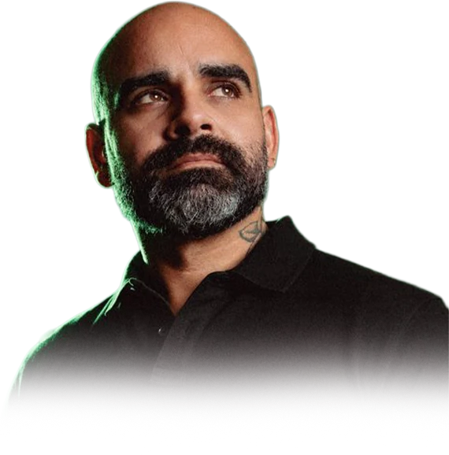

ARRIBA LOS DE ABAJO
GABO
RAMOS
Hablando con la gente. Escuchando el Distrito 20 barrio por barrio.
CABO ROJO · HORMIGUEROS · SAN GERMÁN

RUTA 20
26 BARRIOS.
UN DISTRITO.
RUTA 20 es un recorrido por los 26 barrios de Cabo Rojo, Hormigueros y San Germán para escuchar directamente a sus comunidades, conocer sus necesidades y documentar sus realidades. Barrio por barrio, escuchando antes de proponer.
0/26
BARRIOS VISITADOS
PRÓXIMA PARADA
Próximamente
BARRIO
MUNICIPIO
FECHA
COMUNIDAD
ENCUENTROS
Fechas, lugares y reseñas de cada encuentro con las comunidades del distrito, a medida que se vayan confirmando.
Próximamente se publicarán aquí los primeros encuentros.
VOCES DEL DISTRITO
LO QUE ESTOY
ESCUCHANDO
Temas que van surgiendo en las conversaciones con cada comunidad.
AGUA
PEQUEÑOS NEGOCIOS
ENVEJECIENTES
AMBIENTE
EDUCACIÓN
DEPORTE
TRANSPORTACIÓN
SERVICIOS PÚBLICOS
SALUD
AGRICULTURA
SOBRE MÍ
CABO ROJO · HORMIGUEROS · SAN GERMÁN
SOY GABO RAMOS
Y SOY CABORROJEÑO.
Soy Gabo Ramos y soy caborrojeño. Nací en Mayagüez y me crié en Cabo Rojo, el pueblo que formó gran parte de quien soy. Pero mi historia también está profundamente ligada a los otros dos pueblos que componen el Distrito 20. En Hormigueros cursé mis años de escuela superior, una etapa importante de mi formación. Y San Germán es el pueblo que escogí para formar mi hogar: aquí resido junto a mi esposa, Sujeily Ortiz, sangermeña, y aquí vimos nacer y crecer a nuestros dos hijos, Victoria y Álvaro.
Mi trayectoria profesional ha estado ligada al arte, la comunicación y el compromiso con Puerto Rico. Soy documentalista, director creativo y comunicador, y durante más de una década he trabajado en producción audiovisual, publicidad, medios y creación de contenido.
Hoy utilizo esas herramientas para documentar, fiscalizar y contar las historias de nuestras comunidades. Proyectos como La Esencia del Conflicto nacen precisamente de esa convicción: que conocer lo que ocurre, escuchar a quienes lo viven y hacer accesible esa información también es una forma de servir.
Mi trayectoria profesional ha estado ligada al arte, la comunicación y el compromiso con Puerto Rico. Soy documentalista, director creativo y comunicador, y durante más de una década he trabajado en producción audiovisual, publicidad, medios y creación de contenido.
Hoy utilizo esas herramientas para documentar, fiscalizar y contar las historias de nuestras comunidades. Proyectos como La Esencia del Conflicto nacen precisamente de esa convicción: que conocer lo que ocurre, escuchar a quienes lo viven y hacer accesible esa información también es una forma de servir.
CABO ROJO
MI CASA.
HORMIGUEROS
FUE PARTE DE MI FORMACIÓN.
SAN GERMÁN
SE CONVIRTIÓ EN MI HOGAR.
HABLEMOS
ENVÍA UN MENSAJE
Puedes utilizar este espacio para enviar una pregunta, una observación o una solicitud de contacto. Describe brevemente el asunto y, si deseas respuesta, deja un correo electrónico.
AVISO DE PRIVACIDAD
Los mensajes enviados a través de este formulario son administrados directamente por Gabo Ramos.
Se utilizarán únicamente para atender la comunicación y se conservarán durante el tiempo necesario para ese propósito.
Se utilizarán únicamente para atender la comunicación y se conservarán durante el tiempo necesario para ese propósito.